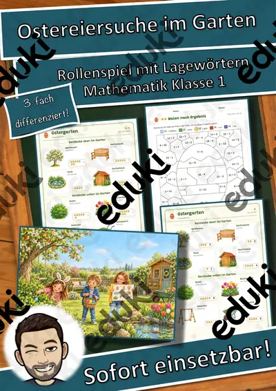
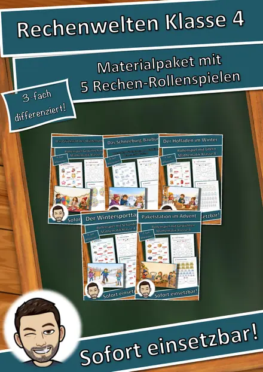
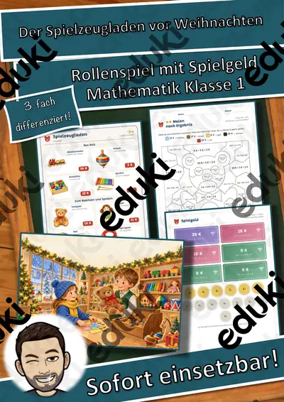
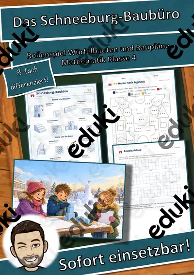
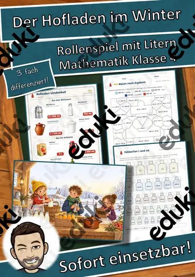
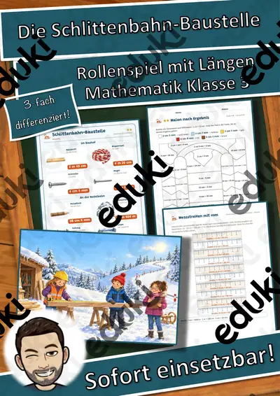
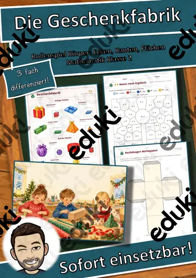
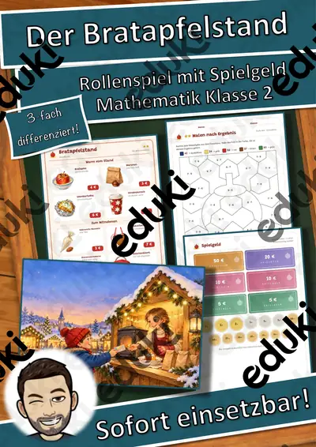
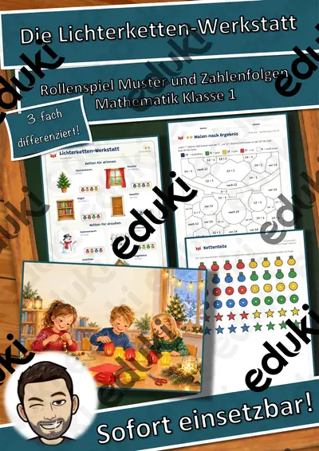
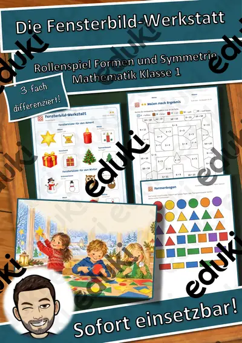

Der Ostermarkt – Rollenspiel Gewichte mit Brüchen ½ ¼ ¾ kg, 3-fach differenziert (Klasse 4)

Ostereiersuche im Garten – Rollenspiel Lagewörter und Zählen bis 20, 3-fach differenziert (Klasse 1)

Der Faschingsumzug – Rollenspiel Zeitspannen und Fahrplan, Anfang und Ende berechnen, 3-fach differenziert (Klasse 3)

Der Faschingsladen – Rollenspiel Kombinatorik und Rechnen mit Geld, 3-fach differenziert (Klasse 2)

Materialpaket Rechenwelten im Winter für die 4. Klasse: 5 Mathe-Rollenspiele, 3-fach differenziert (Wintertombola, Schneeburg, Paketstation & mehr)

Materialpaket Rechenwelten im Winter für die 3. Klasse: 8 Mathe-Rollenspiele, 3-fach differenziert (Weihnachtsbäckerei, Lichterpark, Eisbahn & mehr)

Materialpaket Rechenwelten im Winter für die 2. Klasse: 6 Mathe-Rollenspiele, 3-fach differenziert (Weihnachtsmarkt, Kinderkino, Lebkuchen & mehr)

Materialpaket Rechenwelten im Winter für die 1. Klasse: 5 Mathe-Rollenspiele, 3-fach differenziert (Adventsmarkt, Plätzchenbäckerei, Wildpark & mehr)

Das Reisebüro: Winterreise in die Berge – Rollenspiel Maßstab, Kilometer und Meter, 3-fach differenziert (Klasse 4)

Die große Winter-Umfrage – Rollenspiel Daten, Tabellen und Säulendiagramme, 3-fach differenziert (Klasse 3)

Der Spielzeugladen vor Weihnachten – Rollenspiel Münzen und Scheine bis 20 €, 3-fach differenziert (Klasse 1)

Der Weg durchs Wichteldorf – Rollenspiel Wege, Lagewörter und Schritte zählen, 3-fach differenziert (Klasse 1)

Das Weihnachtspostamt – Rollenspiel Rechnen mit Euro und Cent, gemischte Schreibweise, 3-fach differenziert (Klasse 2)

Halloween-Armbanduhr aus Papier – Uhrzeit lernen mit Bastelvorlage, 3-fach differenziert (Klasse 2/3)

Halloween-Kegelfiguren – Körper Kegel basteln und erforschen, 3-fach differenziert (Mathematik/Kunst Klasse 3/4)

Die Kinderpunsch-Bar – Rollenspiel Brüche in Größen: ½ l, ¼ l, ¾ l und Milliliter, 3-fach differenziert (Klasse 4)

Das Schneeburg-Baubüro – Rollenspiel Würfelbauten, Baupläne und Rauminhalt, 3-fach differenziert (Klasse 4)

Das Glücksrad der Wintertombola – Rollenspiel Gewinnchancen und Wahrscheinlichkeit, 3-fach differenziert (Klasse 4)

Der Wintersporttag – Rollenspiel Sekunden, Minuten und Sekunden umwandeln, Rangliste, 3-fach differenziert (Klasse 4)

Der Hofladen im Winter – Rollenspiel Hohlmaße l und ml, 3-fach differenziert (Klasse 4)

Die Schachtelwerkstatt fürs Fest – Rollenspiel Würfelnetze und rechter Winkel, 3-fach differenziert (Klasse 3)

Der Weihnachtszirkus – Rollenspiel Division mit Rest, 3-fach differenziert (Klasse 3)

Der Plan für die Eisbahn – Rollenspiel Lagepläne, Flächen und Umfang, 3-fach differenziert (Klasse 3)

Der Lichterpark in der Winternacht – Rollenspiel Zahlenraum bis 1000, halbschriftlich und schriftlich rechnen, 3-fach differenziert (Klasse 3)

Mit dem Bus zum Christkindlmarkt – Rollenspiel Zeitspannen, Busfahrplan und Umsteigen, 3-fach differenziert (Klasse 3)

Die Schlittenbahn-Baustelle – Rollenspiel Längen km, m, cm und mm, 3-fach differenziert (Klasse 3)

Die Geschenkfabrik – Rollenspiel Körper, Ecken, Kanten und Flächen, 3-fach differenziert (Klasse 2)

Der Bratapfelstand – Rollenspiel Einmaleins mit Geld, Euro und Cent, 3-fach differenziert (Klasse 2)

Die Lichterketten-Werkstatt – Rollenspiel Muster und Zahlenfolgen, 3-fach differenziert (Klasse 1)

Die Fensterbild-Werkstatt – Rollenspiel Formen, Muster und Symmetrie, 3-fach differenziert (Klasse 1)
Keine Materialien gefunden – versuch einen anderen Suchbegriff oder Filter.
Rechnen, das eine Geschichte hat
Mathematik wird leichter, wenn sie in einem Zusammenhang steht. Die Rechenwelten sind analoge Rollenspiele für die Klassen 1 bis 4: Die Klasse betritt eine Welt, etwa „Der Faschingsladen“, „Der Ostermarkt“ oder „Die Lichterketten-Werkstatt“, und löst dort Aufgaben, weil die Rolle es verlangt. Jede Welt ist in drei Stufen differenziert, die Lösungen liegen bei.
Klasse 1 bis 4: Welten für jede Jahreszeit
Das Angebot folgt dem Schuljahr. Zu Weihnachten stehen „Der Spielzeugladen vor Weihnachten“ und „Der Weg durchs Wichteldorf“ bereit, zum Frühjahr „Ostereiersuche im Garten“. Für ältere Grundschulkinder gibt es etwa „Das Reisebüro: Winterreise in die Berge“ und „Die große Winter-Umfrage“. Mehrere Welten sind als Paket zusammengefasst, zum Beispiel für eine Klassenstufe im Winter.
Klasse 5 bis 7: Brüche, Prozent und Formen
Ab Klasse 5 wechselt das Format. Zur Geometrie gibt es „Raumgeometrie“ und „Steckbriefe Geometrische Flächen mit Formeln“, zu Brüchen und Teilbarkeit Mindmaps mit vier Arbeitsblättern und Lernvideo. In Klasse 7 folgen Prozentrechnung, Zinsrechnung und „Rabatt & MwSt“ in derselben Bauart.
Klasse 8 bis 10: Prüfungen vorbereiten
Hier stehen „Quadratische Funktionen“, „Potenzen und Wurzeln“, „Lineare Gleichungssysteme“, „Prisma und Zylinder“ und „Binomische Formeln“ im Mittelpunkt. Wer auf einen Abschluss zuarbeitet, findet „Quali Mathematik Teil A“ und eine Probeprüfung für die Klasse 10 mit Lösungen.
Die Mittelstufen-Materialien sind knapp gehalten: Das Wesentliche eines Themas steht auf wenigen Seiten, ergänzt um Aufgaben und Lösungen. Das spart Vorbereitungszeit, wenn vor einer Klassenarbeit noch eine Wiederholungsstunde gebraucht wird.
Häufige Fragen
Was ist der Unterschied zwischen einer Rechenwelt und einem normalen Arbeitsblatt?
Eine Rechenwelt ist ein Rollenspiel mit Material zum Ausschneiden. Die Aufgaben ergeben sich aus der Spielsituation, nicht aus einer Aufgabenliste.
Eignen sich die Prüfungstrainings für Klassenarbeiten?
Sie fassen das Wesentliche eines Themas zusammen und bieten Aufgaben in Prüfungsform. Als Vorbereitung auf Klassenarbeiten und Abschlussprüfungen sind sie gedacht.
Gibt es Differenzierung?
In den Rechenwelten ja, in drei Stufen. So rechnet die ganze Klasse dieselbe Geschichte mit unterschiedlichem Anspruch.
Wie finde ich eine bestimmte Rechenart?
Nutze den Klassenfilter oder die Suche, etwa nach „Einmaleins“ oder „Brüche“.